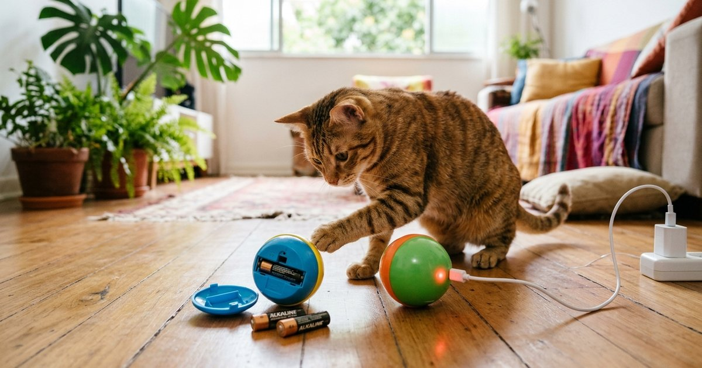
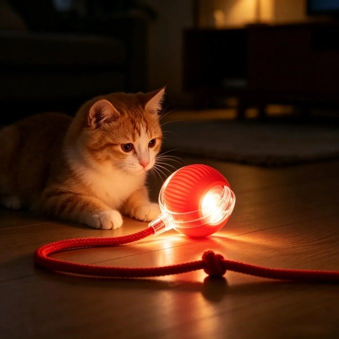
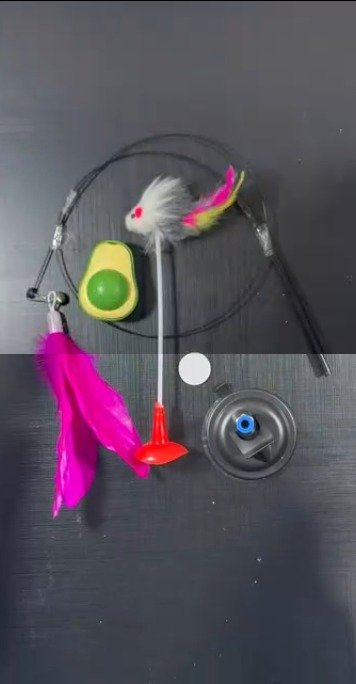
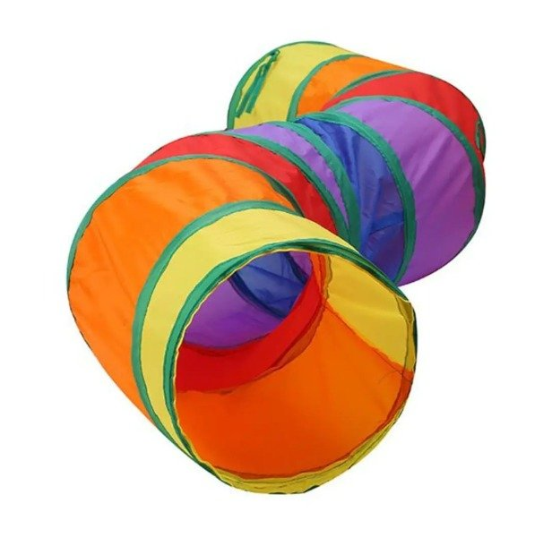
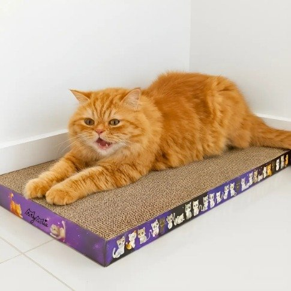

Brinquedos interativos para gato usam três fontes de energia principais: pilha comum, bateria recarregável via USB, ou (mais raramente) alimentação direta na tomada. A escolha certa depende da frequência de uso e da sua disposição para trocar pilhas regularmente.
Vantagem: reposição simples, encontrada em qualquer mercado.
Desvantagem: custo recorrente que se acumula com uso frequente, além do descarte ambiental das pilhas usadas.
Vantagem: sem custo recorrente de reposição, mais sustentável a longo prazo — baterias recarregáveis modernas suportam centenas de ciclos de recarga (algumas classificadas para mais de 500), o que reduz bastante o descarte de pilhas comuns (LXbattery, retrieved 2026-08-22).
Desvantagem: exige lembrar de recarregar e ter um carregador/cabo USB disponível — se descarregar sem aviso, o brinquedo simplesmente para de funcionar até a próxima recarga.
| Perfil de uso | Recomendação |
|---|---|
| Uso diário intenso | Recarregável — evita gasto recorrente com pilhas |
| Uso ocasional | Pilha — sem preocupação de recarregar antes de cada uso |
| Preocupação ambiental | Recarregável — menos descarte de pilhas |
Antes de parar por completo, muitos modelos recarregáveis dão sinais de queda de energia: movimento mais lento, luzes de LED mais fracas, ou o brinquedo desligando sozinho antes do tempo programado. Vale criar o hábito de recarregar após um número fixo de usos (por exemplo, a cada 3-4 sessões diárias), em vez de esperar o aviso de bateria fraca, para não interromper a brincadeira do pet no meio do uso.
Selecionamos quatro brinquedos vendidos no Mercado Livre: uma bolinha recarregável, que é o tipo comparado neste artigo, e três opções que não usam pilha nem bateria, para quem prefere fugir da troca e da recarga. Não incluímos um brinquedo a pilha nesta seleção. Os dados abaixo vêm dos próprios anúncios, consultados em 25/10/2026. Preço e estoque mudam com frequência. Não testamos os produtos.

| Preço | R$ 18,40 (de R$ 38) |
|---|---|
| Energia | Bateria interna recarregável por cabo USB Type-C (cabo incluso) |
| Funções | Rola sozinha, muda de direção ao encontrar obstáculos, luz LED, liga por um botão |
| Material | Plástico com acabamento em sisal |
| Tamanho e peso | 6,5 cm de diâmetro, 54 g |
| Avaliação | 4,8 com 45 avaliações (inclui opiniões de outros países), mais de 100 vendidos |
| Garantia | 90 dias de fábrica |
| Vendedor | riclamimsilva (MercadoLíder) |
Por que indicamos: é um exemplo direto do brinquedo recarregável deste artigo, sem gasto com pilhas, e custa menos de R$ 20.
Pontos de atenção:
🐾 Bola Inteligente CHOCYN recarregável: veja o preço de hoje no Mercado Livre.
Ver preço no Mercado LivreLink de afiliado: podemos receber uma comissão por compras feitas através deste link, sem custo adicional para você.
Brinquedos manuais não precisam de troca de pilha nem de recarga. Em compensação, não se movem sozinhos: a brincadeira depende do gato ou do tutor.

| Preço | R$ 32,88 (de R$ 44,90), R$ 16,44 por brinquedo |
|---|---|
| O que vem | Varinha de 90 cm com base de ventosa e bolinha de catnip num suporte em formato de abacate, com fita dupla face |
| Energia | Nenhuma |
| Material | Plástico e catnip (erva-dos-gatos) |
| Avaliação | 4,6 com 2.110 avaliações, mais de 5 mil vendidos |
| Garantia | O anúncio informa “sem garantia” |
| Vendedor | Loja oficial GAISAPET (MercadoLíder Platinum) |
Por que indicamos: a ventosa prende a varinha no chão, na parede ou na porta, e o gato consegue brincar mesmo quando você não está segurando.
Pontos de atenção:
🐾 Kit varinha com ventosa + bolinha de catnip: veja o preço de hoje no Mercado Livre.
Ver preço no Mercado LivreLink de afiliado: podemos receber uma comissão por compras feitas através deste link, sem custo adicional para você.

| Preço | R$ 29,22 (de R$ 31,43) |
|---|---|
| Medidas | 125 cm de comprimento montado; o destaque diz 25 cm de altura e a ficha, 10 cm |
| Material | Poliéster com estrutura de aço, dobrável |
| Acessório | Bolinha pendurada |
| Energia | Nenhuma |
| Avaliação | 4,8 com 3.007 avaliações, mais de 5 mil vendidos |
| Vendedor | Loja oficial Kroys Brinquedos (MercadoLíder Platinum) |
Por que indicamos: tem a maior quantidade de avaliações dos quatro, com nota 4,8, e dobra para guardar quando não está em uso.
Pontos de atenção:
🐾 Túnel Labirinto Arco-íris S: veja o preço de hoje no Mercado Livre.
Ver preço no Mercado LivreLink de afiliado: podemos receber uma comissão por compras feitas através deste link, sem custo adicional para você.

| Preço | R$ 21,99 (de R$ 29,87) |
|---|---|
| Medidas e peso | 44 x 25 x 3 cm, 200 g |
| Material | Papelão ondulado prensado; o bloco pode ser virado quando um lado gasta |
| Energia | Nenhuma |
| Avaliação | 4,7 com 2.582 avaliações, mais de 10 mil vendidos |
| Garantia | 7 dias de fábrica |
| Vendedor | LUNA PRESENTE (MercadoLíder Platinum) |
Por que indicamos: é o mais vendido dos quatro e o segundo mais barato. Dá ao gato um lugar para afiar as unhas longe do sofá.
Pontos de atenção:
🐾 Arranhador de Papelão MyMia: veja o preço de hoje no Mercado Livre.
Ver preço no Mercado LivreLink de afiliado: podemos receber uma comissão por compras feitas através deste link, sem custo adicional para você.
Não existe opção universalmente melhor. Pilha vence em praticidade pontual, com reposição simples em qualquer mercado. Recarregável vence em custo e sustentabilidade no uso diário, evitando o descarte recorrente de pilhas.
Para uso diário intenso, sim — evita gasto recorrente com pilhas e baterias recarregáveis modernas suportam centenas de ciclos de recarga. Para uso ocasional, a pilha pode ser mais prática, já que não exige lembrar de recarregar antes de cada uso.
Muitos modelos recarregáveis dão sinais antes de parar por completo: movimento mais lento, luzes de LED mais fracas, ou desligamento antes do tempo programado. Vale criar o hábito de recarregar após um número fixo de usos, em vez de esperar o aviso de bateria fraca.
Sim, o descarte é um ponto negativo: pilhas usadas não devem ir para o lixo comum e precisam ser levadas a um ponto de coleta. Baterias recarregáveis reduzem bastante esse descarte ao suportar centenas de ciclos de recarga.
Não existe opção universalmente melhor — pilha vence em praticidade pontual, recarregável vence em custo e sustentabilidade no uso diário. Avalie a frequência real de uso do seu gato antes de decidir. Mais dúvidas? Veja brinquedo interativo para gato: perguntas frequentes.
Quer ver preço e ficha de cada um? Volte aos quatro brinquedos à venda no Mercado Livre.
volte ao guia completo de brinquedo interativo para gato
Veja como escolher o melhor brinquedo interativo para gato entediado.
Escrito pela Equipe Smart Pet Gadgets, redação especializada em comparativos de produtos pet no mercado brasileiro. Veja nossa política editorial e como verificamos as fontes citadas neste artigo.
Nildo Alves — curadoria de produtos pet no Smart Pet Gadgets. Pesquisa produtos para cães e gatos, cruzando especificações de fabricante com boas práticas veterinárias e dados de mercado.
Sobre o Smart Pet Gadgets · Contato · Política editorial e de afiliados